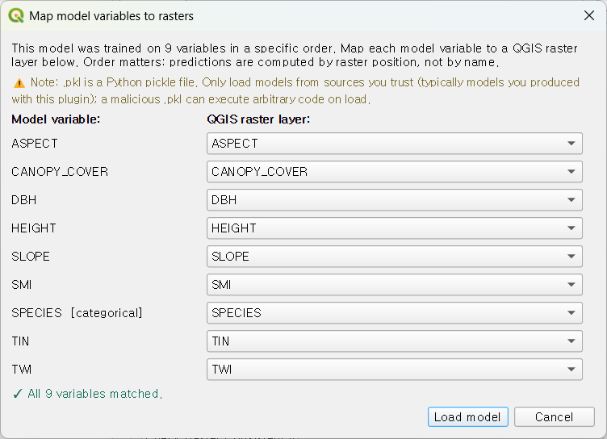

모델 저장 및 재사용¶
학습된 모델을 디스크에 저장하고 나중에 변수 매핑이 정확함을 확인한 상태로 다시 불러오는 것은 협업, 갱신된 환경 데이터로의 재투영, 그리고 QMaxent로 발표한 결과의 장기적 재현성에 필수적입니다.
학습된 모델 저장¶
성공적으로 끝난 모든 학습은 ② Parameters 탭에서 지정한 경로
(기본 <project>/qmaxent_output/model.pkl)에 model.pkl 파일을
기록합니다. 이는 학습된 elapid.MaxentModel 인스턴스의 Python pickle
이며 다음을 담고 있습니다:
- 적합된 정규화-가능도 계수
- 변수 이름 전체 목록 (순서 포함)
- 변수별: 유형(
continuous/categorical), 학습 데이터 범위 (continuous) 또는 클래스 집합(categorical) - 전체 hyperparameter 집합 (피처 클래스, RM, CV 방식, 무작위 시드)
- QMaxent 빌드 버전 스탬프
.pkl을 학습된 모델의 정식 기록으로 취급하세요. 협업자에게
공유하거나 보충자료로 발표할 때 results.xlsx와 함께 배포합니다 —
Araújo et al. 2019가 발표된 SDM의 최소 재현성
단위로 인용한 파일 쌍입니다.
저장된 모델 재로드¶
① Data 탭에서 Load existing model (.pkl)… 버튼을 클릭하고 저장된 파일을 선택. QMaxent는 pickle에서 변수 목록을 읽고 변수 매핑 대화상자를 엽니다:

대화상자에는 저장된 변수마다 한 줄이 있습니다. 각 줄에 대해 QMaxent는
변수 이름과 레이어 이름을 매칭하여 현재 QGIS 프로젝트에서 기본 래스터를
선택합니다. 이름이 정확히 일치할 때 대화상자는 단순한 확인 단계입니다.
이름이 다를 때 대화상자는 명시적 매핑을 강제 — 현재 명명 규약과
일치하지 않는 .pkl을 로드하는 유일한 방법은 어떤 래스터가 어떤 저장된
변수에 매핑되는지 의식적으로 다시 진술하는 것입니다.
이 안전장치는 협업 SDM 프로젝트에서 "어제는 됐는데" 식 버그의 반복적 원인으로 기록된 침묵의 순서 오류를 방지합니다.
변수 매핑 대화상자 상세¶
대화상자는 세 열을 렌더링:
- 저장된 변수 이름 — pickle에서 읽음, 편집 불가.
- 유형 —
continuous또는categorical, 역시 pickle에서. categorical로 저장된 변수는 현재 프로젝트가 categorical로 표시한 래스터에만 매핑할 수 있습니다. - 매핑된 래스터 — 현재 프로젝트의 래스터를 나열하는 드롭다운. 각 행마다 하나 선택.
푸터 상태 줄은 0 of N mapped로 시작해 드롭다운을 채우면 실시간
업데이트됩니다. OK 버튼은 모든 행이 매핑되었을 때만 활성화됩니다.
확인 후 QMaxent는 모델을 방금 새로 학습한 것처럼 도크를 다시 연결합니다 — ③ Training 탭은 건너뛰고 ④ Results가 바로 활성화됩니다. 새 래스터 스택에서 즉시 공간 투영이나 우선조사 후보지 추출을 실행할 수 있습니다.
갱신된 래스터 스택으로 재투영¶
모델을 다시 로드하는 가장 흔한 이유는 재학습 없이 더 최근이거나 고해상도의 동일 환경 변수에 적용하는 것입니다. 다른 래스터에서 재학습하면 다른 모델이 만들어지므로, "원래 모델은 새 데이터에 대해 무엇을 예측하는가"라고 묻는 유일한 올바른 방법입니다.
워크플로:
- 원래 래스터로 모델을 한 번 학습;
model.pkl저장. - 새 래스터 스택을 QGIS에 로드.
- Load existing model (.pkl)…, 저장된 변수를 새 래스터에 매핑, OK 클릭.
- ④ Results → Spatial Projection 으로 전환하여 실행.
preflight 대화상자가 새 데이터로 인해 도입된 외삽을 표시합니다 — 새 래스터가 지리적 범위를 확장하거나 원래 학습 범위 밖의 시간대를 포함할 때 특히 중요합니다.
Python pickle 파일에 관한 보안 주의¶
.pkl 파일은 실행 가능한 Python 바이트코드입니다. 악성 .pkl을
로드하면 사용자의 컴퓨터에서 임의의 코드가 실행될 수 있습니다.
직접 만들었거나 신뢰할 수 있는 협업자에게서 받은 .pkl 파일만
로드하세요.
QMaxent는 Python의 pickle 모듈 자체가 하는 것 이상으로 제3자 .pkl의
출처를 검증할 방법이 없습니다 (즉, 아무것도 검증하지 않음). QMaxent로
발표한 결과의 안전한 패턴은:
- 결정적 시드, hyperparameter, 입력이 갖춰져 있어 검토자가 pickle 로드를
선호하지 않을 경우 처음부터 동등한 모델을 재학습할 수 있도록
model.pkl을results.xlsx와 함께 배포. - 보충자료에 SHA-256 해시로
.pkl에 서명.
다음¶
동반 문서는 결과 내보내기로, 모든 model.pkl과
함께 배송되는 다중 시트 XLSX 워크북을 설명합니다.